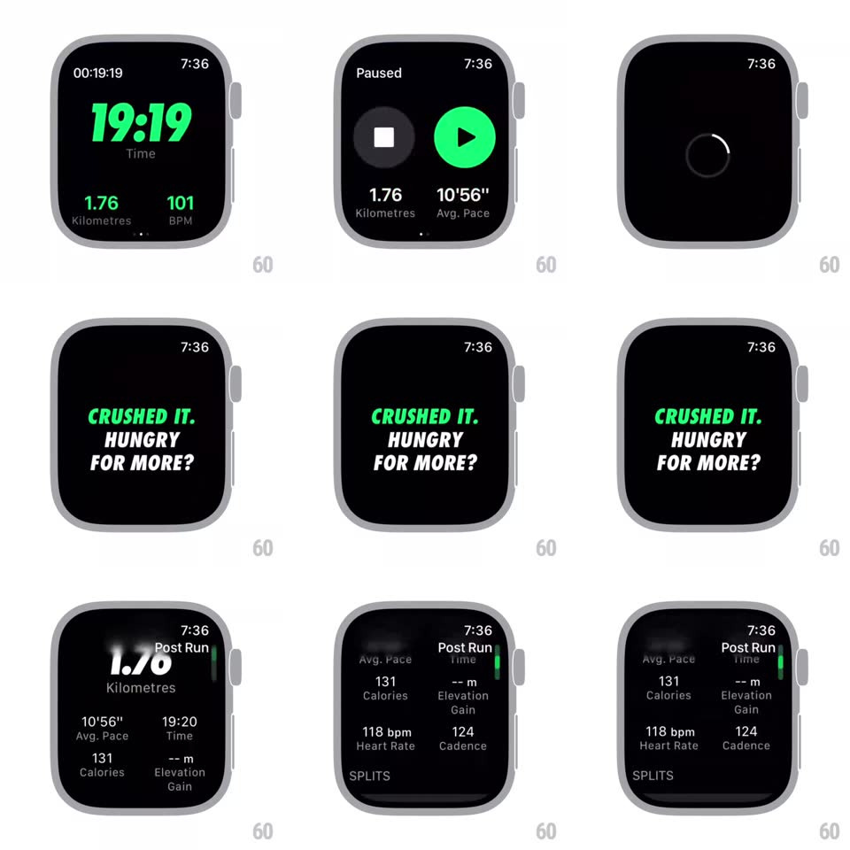

Media
Frame-by-frame

Rebuild this interaction 1:1: Nike Run Club's watch end-of-workout flow - from the live metrics screen to the Paused state (stop square + green play), a bold "CRUSHED IT. HUNGRY FOR MORE?" interstitial, then a scrollable Post Run summary with stat grid, splits, and Done.

Rebuild this interaction 1:1: Nike Run Club's watch end-of-workout flow - from the live metrics screen to the Paused state (stop square + green play), a bold "CRUSHED IT. HUNGRY FOR MORE?" interstitial, then a scrollable Post Run summary with stat grid, splits, and Done.
## Integration
Integration: stack-agnostic spec - springs given as stiffness/damping, timed motions as duration + curve; map every value to your framework and animation library of choice.
## Scene
Black watch screens: live run (19:17 Time, 1.76 Kilometres, 101 BPM in volt green); Paused (gray stop circle, green play circle, 1.76 km + 10'56" Avg. Pace); interstitial ("CRUSHED IT." in green italic, "HUNGRY FOR MORE?" in white italic); Post Run summary (giant 1.76 Kilometres, grid: Avg. Pace 10'56", Time 19:20, Calories 131, Elevation Gain --m, Heart Rate 118 bpm, Cadence 124; SPLITS list "1 - 9'37""; Done button).
## Motion spec
Pattern: horizontal swipe pager + staggered summary build.
- Swipe right on live metrics: the Paused screen slides in (300ms ease-in-out, paging); swipe back returns.
- Tap the stop square: it pulses (scale 0.9 -> 1, 120ms), then the interstitial slams in: "CRUSHED IT." scales 1.3 -> 1 with a hard spring (~500/22, ~300ms), "HUNGRY FOR MORE?" follows 150ms later rising 12px + fading.
- Interstitial holds ~1.2s, then wipes up to reveal the summary: the 1.76 headline counts up from 0 (600ms), stat-grid values fade in row by row (120ms stagger).
- Crown/drag scrolls the summary smoothly; SPLITS rows slide in from the right as they enter the viewport (60ms stagger); Done sits at the end, pulsing subtly.
- Tap Done: the whole stack fades to black (300ms) and exits to the watch face.
## Calibration
- Green is reserved for live/active elements; the summary is white-on-black with green only in the interstitial.
- Page dots track the live/paused pager position.
## Reduced motion
Screens crossfade; the headline renders without count-up.
## Don't miss
- "CRUSHED IT." is green and "HUNGRY FOR MORE?" is white - two-tone, both italic.
- The splits list uses inset rounded rows, visually distinct from the flat stat grid.